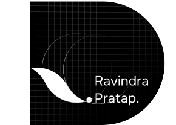

Pixel sprites cut from card and folded round a stem. Each page stands one on the line under its title; they unfold when they come into view, lean toward the pointer, and rustle when it brushes past. Press one to make it bloom - a seed head blows away instead, and grows back.
A line drawing in the page's own ink, drawn in parts so a line shows where a leg crosses the body. It chases the pointer a moment behind it, sits and looks up when it arrives, bats at the feather when it hangs still overhead, and crouches and pounces when it is flicked close by. Left alone it washes, then curls up and sleeps until the feather moves. On touch it runs to a tap; from the keyboard it walks over to whatever has focus. With reduced motion it stays where it is and only turns to look.
The box
Cardboard box
A box sits on a line near the top of each page. When the cat has nothing better to do - or the feather wanders over the box - it climbs in, the flaps fall half shut, and it ignores the feather completely. Now and then its ears come up over the rim. Only a shake brings it out: wiggle the box with the pointer held down, press it three times quickly, or focus it and press Enter. Out of sight for long, the cat gets bored and leaves on its own.
The feather
On a mouse the pointer becomes a cat toy: a bead at the exact point that clicks, a feather hanging from it that swings with every change of direction, and a string up to a wand nobody sees. Passing over a link or a button rings the bead. Text fields keep their caret.
Make your own
Every plant and the box are plain JSON: a palette and a list of pieces, each a pixel grid with a pivot, a place, a turn and a way of arriving. The Paper Pixel bench draws them, folds them in 3D with the same engine this world loads, and exports the JSON or a link.
Juni walks the strip of ground along the bottom of every page, stops to look around, gets sleepy, and waves when the pointer arrives - press Juni for a hint and a coin. A black cat follows a few steps behind; it sits when Juni stops, curls up if nothing happens, and likes to be petted.
JuniThe cat
The land
Under every page: the sun by day and the moon and stars by night, drifting clouds, two ranges of mountains, hills with trees and bushes, a floating island, and a strip of ground scattered with flowers, mushrooms, rocks, a log, a fence and a sign - placed differently on each page. Every piece below is a sprite from the library, outlined by the renderer, and changes colour at night.
Every sprite here is rows of palette letters, outlined by the renderer. The Sprite Bench opens any of them, paints and animates frames in this palette, and exports the frames for the library.
Blocks, coins and things to find
A bonus block sits beside every page title: hit it for coins until it goes dull, and the bricks beside it break. Coins hide under section headings for anyone who lingers. The score appears only once the first coin is found, and is kept between visits.
Bonus blockBrickCoinHeartStarGemKeyEgg
The water
The page is a dive. It starts at the surface of a sunlit lagoon and goes down as you scroll: by day to the edge of the midnight zone, by night from the twilight to the abyssal floor. The water takes its colour from the light that is left - a tenth less every 75 metres, red first, blue last. Overhead is the surface window with rays fanning down from it; caustics fall on everything, marine snow drifts, and below the twilight the plankton glow.
0 m · SunlightSunlight zone, 0-200 m200 m · TwilightTwilight zone, 200-1,000 m1,000 m · MidnightMidnight zone, 1,000-4,000 m4,000 m · AbyssAbyss, below 4,000 m
The scene
The scene is three-dimensional and low-poly, every face flat-shaded and coloured by the light that is left. Distance is fog in the water's own colour, so near rock is crisp and far rock becomes a silhouette. Walls of broken rock run down both sides; each face has its own tint, lit on top, darker underneath, with moss in the shallows. Kelp grows in many greens, gold where the light reaches. Deeper down: a ledge of seagrass lit by glowing fish, then hexagonal basalt and the abyssal floor.
Rock, facetedKelp · 0-40 mBasalt columns · 3,600 mSea floor chart: a seamount, 250 m contours
Who lives where
Each creature is built from cross-sections after its own anatomy and appears at the depth it really lives at, so a long page meets them in order. Schools are flocks: every fish steers by its neighbours, wags its own tail and parts around the pointer. Tentacles and arms are soft and drag through the water. Humpbacks pass when they sing.
Bait ball, a flock · 0-200 mGreen sea turtle · 0-200 mManta ray · 0-200 mHumpback whale · 0-700 mGlowing fish · 300 mLanternfish · 200-1,000 mJellyfish · 200-1,600 mSquid · 400-1,300 mSiphonophore · 1,500 mAnglerfish · 2,000-3,500 mTripod fish · the floorSea pig · the floorGlass sponge · the floor
Mother-of-pearl
The one iridescence in the system, and it is real: a thin film a few hundred nanometres thick reflects some wavelengths and cancels others, and the thickness wanders across the surface. Focus, selection and success use it; so do the pearls, shells and gems. Made in the Nacre Lab.
PearlAbalone, from insideSoap bubble, drainingBlack opal cabochon
The glass
Panels are panes of thick water: the sea bends at their edges and a thin rim catches the light. The one action is sea glass with a sheen that moves with the light. Two other materials were tried and kept here for reference: Lalique-style opalescent glass reads as milk on a bright page, and abalone is too dark for the sunlit zone.
Dive inSea glass · the one actionDive inOpalescent · tried, not usedDive inAbalone · tried, not usedFocused fieldFocus, mother-of-pearlReefKelpTrenchSea-glass chips, one chosen
The sky
Curtains of light behind every page, leaning toward the pointer and brightening as it moves. A click on open sky sends a ripple through them.
The shooting star
Now and then one crosses the screen. Catch it and it is a wish.
The flare
A success sends a burst of light from the button that earned it.
The things in the sky
Curtain of lightStarsShooting starFlareGlass panel
The marks and the small things
Studio is the system as it ships: ink on paper, hairlines and quiet motion. Its things are few and exact - two marks, a set of line icons, one accent word, one highlight. Pick another world above to see what it brings.
Lockup

The master Dconvert.The accent wordArrowSearchCheckUploadSelection mintHairline